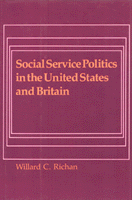

<body bgcolor="#FFFFFF" text="#000000" link="#0000FF" vlink="#CC0000" alink="#CC0000"><center><hr width="350" size="1" align="center" noshade>Extensive interviews with participants of six cases in which social workers played a key role in the political process<hr width="350" size="1" align="center" noshade><p><a href="https://cdcshoppingcart.uchicago.edu/Cart/ChicagoBook.aspx?ISBN=9780877222163&&PRESS=temple" target="_top">Buy this book!</a> | <a href="https://cdcshoppingcart.uchicago.edu/Cart/Cart.aspx?PRESS=temple" target="_top">View Cart</a> | <a href="https://cdcshoppingcart.uchicago.edu/Cart/Cart.aspx?PRESS=temple" target="_top">Check Out</a></p><p></p></center><!--none//--><h1>Social Service Politics in the United States and Britain</h1>
<h3>Willard C. Richan</h3>
<P>cloth 0-87722-216-9 $29.95, Apr 81, <FONT COLOR=#990033>Out of Print</FONT>
<BR> 290 pp
</P><p>With the ascent to office of Ronald Reagan and Margaret Thatcher amid general economic crisis, social programs in the United States and Britain are facing severe cutbacks. What should social workers do? In the past they have often been reluctant to take political action to defend their jobs and their clients. But in the 1960s and 1970s there <I>were</I> examples of effective political intervention that social work professionals can profit from and apply to the eighties.
<p>Drawing on extensive interviews with the participants, the author describes six cases, three from each side of the Atlantic, in which social workers played a key role in the political process. Four are legislative cases:
<ul><li><p>Social Work (Scotland) Act of 1968, which was the basis for reorganizing personal social services in Scotland
<li><p>Local Authority Social Services Act of 1970, which was based on the Seebohm Committee Report
<li><p>Allied Services Act, which, despite the support of the Secretary of HEW and the Nixon administration, filed to get out of committee
<li><p>Revenue Sharing Act of 1972 and Title XX, over which social workers and fiscal conservatives battled with mixed results</ul>
<p>Two other cases deal directly with the concerns of the social service workforce:
<ul><li><p>The bitter British strikes of 1987 and 1979
<li><p>The struggle over licensure in the United States from the mid-1970s to the present</ul>
<p>Through these cases and his analysis, the author shows precisely how committees, interest groups, experts, and legislatures acted in the contrasting political environments of the two countries. He explains what kinds of political resources social workers have, and identifies the points where social workers got involved, failed to intervene, or fought each other. It is when their professional interests and the interests of their clients lie in the same direction, the author argues, that social workers are most likely to take effective political action.
<BR>&nbsp;<H2>About the Author(s)</H2>
<P><b>Willard C. Richan</b> is Professor of Social Administration at Temple University.</P>
<BR><H2>Subject Categories</H2>
<p><A HREF="/tempress/political.html" TARGET="_top">Political Science and Public Policy</a>
</p>
<p align="center"><a href="https://cdcshoppingcart.uchicago.edu/Cart/ChicagoBook.aspx?ISBN=9780877222163&&PRESS=temple" target="_top">Buy this book!</a> | <a href="https://cdcshoppingcart.uchicago.edu/Cart/Cart.aspx?PRESS=temple" target="_top">View Cart</a> | <a href="https://cdcshoppingcart.uchicago.edu/Cart/Cart.aspx?PRESS=temple" target="_top">Check Out</a></p><p><font face="Arial" size="1"><a href="copyright.html" onMouseOver="window.status='Web Copyright Policy';return true;" onMouseOut="window.status=''" title="Web Copyright Policy">&copy;</a> 2015 <a href="http://www.temple.edu" target="new" onMouseOver="window.status='Link to Temple University home page';return true;" onMouseOut="window.status=''" title="Link to Temple University home page">Temple University</a>. All Rights Reserved. http://www.temple.edu/tempress/titles/234_reg.html</font></p>